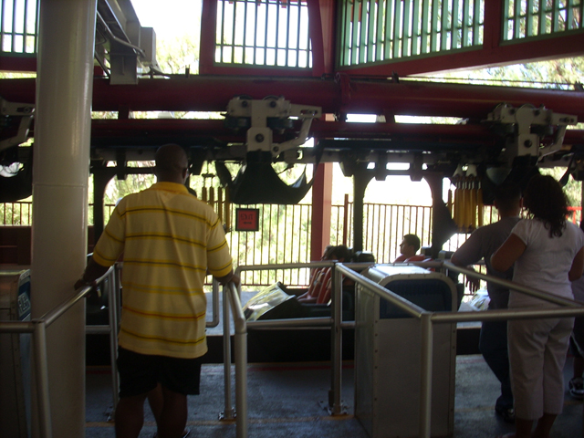
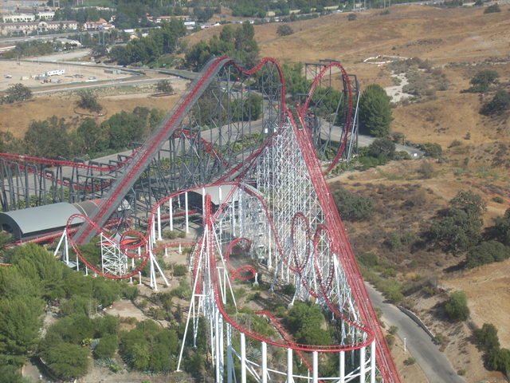

Labor Day SFMM 08
 Ok, so this is the first update since the North of the Border Trip. Anyways, we rode Tatsu immedietly so I could wash the Superman Ulteminte Flight taste out of my mouth.
Ok, so this is the first update since the North of the Border Trip. Anyways, we rode Tatsu immedietly so I could wash the Superman Ulteminte Flight taste out of my mouth.
 I'd like to thank Superman Ultimate Flight for showing me just how great of a ride Tatsu is.
I'd like to thank Superman Ultimate Flight for showing me just how great of a ride Tatsu is.
 After the idiot from yesterday, I highly doubt that Ninja will be open today.
After the idiot from yesterday, I highly doubt that Ninja will be open today.

Well I'll be damned. Good for SFMM for taking care of the problem and opening the ride for others to enjoy.
No wonder that moron came in here! In General Public Speak, that sign says "Topless women with free beer and doughnuts can be found here."
Anyways, Ninja was running moron free today.
I don't want to know how long that bottle has been stuck up there.
Goldrusher through the trees!
Breaking News on Incrediblecoasters! We have learned that by walking while eating, we can eat lunch and walk to X2 at the same time. That's killing two birds with one stone!
Ah Damn It! X2 was down for the day!!! It was running fine yesterday, so what's the problem today?
 I must be immune to Superman's roar as it doesn't bother me anymore.
I must be immune to Superman's roar as it doesn't bother me anymore.
 Batman the Ride. I am able to ride this as I am not in La Ronde and the park isn't shutting down the line.
Batman the Ride. I am able to ride this as I am not in La Ronde and the park isn't shutting down the line.
Hey! The sign says come on in!!!
 Up next was indeed Riddlers Revenge.
Up next was indeed Riddlers Revenge.
While Riddlers Revenge is a great stand up coaster, it definetly could use some ejector air.
Riddlers Twisty Goodness!
 You know, it's been so long since we've been up in the Sky Tower Museum, that we thought we should check it out again.
You know, it's been so long since we've been up in the Sky Tower Museum, that we thought we should check it out again.
"DUDE!!! THIS THING IS BETTER THAN THE REAL COLLOSUS!!!!!!"

Is that all one ride? I can't tell.
 Good news for Isaac and Andrew, Dirt the Ride is still here!!!
Good news for Isaac and Andrew, Dirt the Ride is still here!!!
That sign makes me miss Cobra @ La Ronde.
So it's been Six Flags that's been behind the Obesity epedemic. Look at that advertising, it totally reveals who they are! Shame on you for making little brats fat!!!
Anyways, no wonder that moron was able to jump the fence. (If can call that a fence.)
 Ninja was just able to swoop down and hit him.
Ninja was just able to swoop down and hit him.
 Warning. Moron crossing is present here. Please wait look both ways to make sure the coast is clear before continuing the course.
Warning. Moron crossing is present here. Please wait look both ways to make sure the coast is clear before continuing the course.
 And to top this all off, DejaVu has gotten the Xcelerator syndrome and now has sharpie black headrests.
And to top this all off, DejaVu has gotten the Xcelerator syndrome and now has sharpie black headrests.
Home